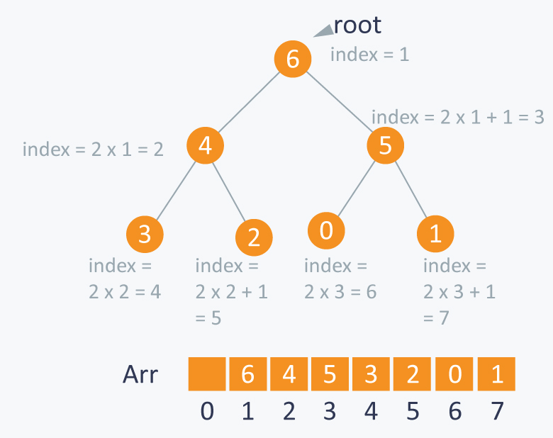

Sắp xếp
1. Bài toán sắp xếp
Định nghĩa : Sắp xếp (Sorting) là quá trình tổ chức lại họ các dữ liệu theo thứ tự giảm dần hoặc tăng dần (ascending or decsending order).
Dữ liệu cần sắp xếp có thể là:
Số nguyên (Integers)
Xâu kí tự (Character Strings)
Đối tượng (Objects)
Khóa sắp xếp (Sort key) là bộ phận của bản ghi xác định thứ tự sắp xếp của bản ghi trong họ các bản ghi. Ta cần sắp xếp các bản ghi theo thứ tự của các khóa.
Ứng dụng của sắp xếp:
- Quản trị cơ sở dữ liệu (Database management).
- Khoa học và kĩ thuật (Science and engineering).
- Các thuật toán lập lịch (Scheduling algorithms), chẳng hạn, thiết kế chương trình dịch (compiler design), truyền thông (telecommunication),...
- Máy tìm kiếm web (Web search engine).
- Và nhiều ứng dụng khác...
Khoá sắp xếp (Sort key):
– Là bộ phận của bản ghi xác định thứ tự sắp xếp của bản ghi trong họ các bản ghi.
– Ta cần sắp xếp các bản ghi theo thứ tự của các khoá.
Các loại thuật toán sắp xếp:
– Sắp xếp trong (internal sort)
Đòi hỏi họ dữ liệu được đưa toàn bộ vào bộ nhớ trong của máy tính
– Sắp xếp ngoài (external sort)
Họ dữ liệu không thể cùng lúc đưa toàn bộ vào bộ nhớ trong, nhưng có thể đọc vào từng bộ phận từ bộ nhớ ngoài
Các đặc trưng của một thuật toán sắp xếp:
– Tại chỗ (inplace):
Nếu không gian nhớ phụ mà thuật toán đòi hỏi là O(1), nghĩa là bị chặn bởi hằng số không phụ thuộc vào độ dài của dãy cần sắp xếp.
– Ổn định (stable):
Nếu các phần tử có cùng giá trị vẫn giữ nguyên thứ tự tương đối của chúng như trước khi sắp xếp.
Có hai phép toán cơ bản mà thuật toán sắp xếp thường phải sử dụng:
– Đổi chỗ (Swap): Thời gian thực hiện là O(1)
void swap(datatype &a, datatype &b){
datatype temp = a; //datatype-kiểu dữ liệu của phần tử
a = b;
b = temp;
}
– So sánh: Compare(a, b) trả lại true nếu a đi trước b trong thứ tự cần sắp xếp và false nếu trái lại.
2. Các thuật toán sắp xếp cơ bản
2.1 Sắp xếp chèn (Insertion sort)
- Tại bước k = 1, 2, ..., n, đưa phần tử thứ k trong mảng đã cho vào đúng vị trí trong dãy gồm k phần tử đầu tiên.
- Kết quả là sau bước k, k phần tử đầu tiên là được sắp thứ tự.
void InsertionSort(int a[], int n){
for (int i = 1; i < n; i++){
int last = a[i];
int j = i;
while (j > 0 && a[j - 1] > x){
a[j] = a[j - 1];
j--;
}
a[j] = last;
}
}
Đánh giá:
- Sắp xếp chèn là tại chỗ và ổn định (In place and Stable).
- Best Case: 0 hoán đổi, n-1 so sánh (khi dãy đầu đã được sắp xếp).
- Worst Case: n2/2 hoán đổi và so sánh (khi dãy đầu được sắp xếp ngược với thứ tự cần sắp xếp).
- Average Case: n2/2 hoán đổi và so sánh.
- Thuật toán này có thời gian tính trong tình huống tốt nhất là tốt nhất.
- Là thuật toán sắp xếp tốt đối với dãy đã gần được sắp xếp.
2.2 Sắp xếp lựa chọn (Selection sort)
Các bước thực hiện:
Bước 1: i = 0.
Bước 2: Tìm phần tử a[iMin] trong dãy hiện hành từ a[i] đến a[n-1].
Bước 3: Đổi chỗ a[i] và a[iMin].
Bước 4: Nếu i < n-1 thì lặp lại bước 2 với i++ - Ngược lại thì dừng.
void SelectionSort(int a[], int n){
for (int i = 0; i < n - 1; i++){
int iMin = i;
for (int j = i + 1; j < n; j++){
if (a[iMin] > a[j])
iMin = j;
}
if (i != iMin)
swap(a[i], a[iMin]);
}
}
Đánh giá:
- Best Case: 0 đổi chỗ (n-1 như trong đoạn mã), n2/2 so sánh.
- Worst Case: n-1 đổi chỗ và n2/2 so sánh.
- Average Case: O(n) đổi chỗ và n2/2 so sánh.
- Ưu điểm nổi bật của sắp xếp chọn là số phép đổi chỗ là ít. Điều này là có ý nghĩa nếu như việc đổi chỗ là tốn kém.
2.3 Sắp xếp nổi bọt (Bubble sort)
Bắt đầu từ đầu dãy, thuật toán tiến hành so sánh mỗi phần tử với phần tử đi sau nó và thực hiện đổi chỗ, nếu chúng không theo đúng thứ tự. Quá trình này sẽ được lặp lại cho đến khi gặp lần duyệt từ đầu dãy đến cuối dãy mà không phải thực hiện đổi chỗ (tức là tất cả các phần tử đã đứng đúng vị trí). Cách làm này đã đẩy phần tử lớn nhất xuống cuối dãy, trong khi đó những phần tử có giá trị nhỏ hơn được dịch chuyển về đầu dãy.
void BubbleSort(int a[], int n){
for (int i = 0; i < n - 1; i++)
for (int j = n - 1; j > i; j--)
if (a[j] < a[j - 1])
swap(a[j], a[j - 1]);
}
Đánh giá:
- Best Case: 0 đổi chỗ, n2/2 so sánh.
- Worst Case: n2/2 đổi chỗ và so sánh.
- Average Case: n2/4 đổi chỗ và n2/2 so sánh.
3. Sắp xếp trộn (Merge sort)
3.1 Ý tưởng
Bài toán: Cần sắp xếp mảng A[1 .. n]
Chia (Divide)
– Chia dãy gồm nphần tử cần sắp xếp ra thành 2 dãy, mỗi dãy có n/2 phần tử
Trị (Conquer)
- Sắp xếp mỗi dãy con một cách đệ qui sử dụng sắp xếp trộn
– Khi dãy chỉ còn một phần tử thì trả lại phần tử này
Tổ hợp (Combine)
Trộn (Merge) hai dãy con được sắp xếp để thu được dãy được sắp xếp gồm tất cả các phần tử của cả hai dãy con

3.1 Code
Bấm vào đây để xem chương trình hoàn chỉnh
4 Sắp xếp nhanh (Quick sort)
4.1 Ý tưởng
Quick sort là thuật toán sắp xếp được phát triển dựa trên kỹ thuật chia để trị.
Thuật toán có thể mô tả đệ qui như sau (có dạng tương tự như merge sort):
1. Neo đệ qui (Base case): Nếu dãy chỉ còn không quá một phần tử thì nó là dãy được sắp và trả lại ngay dãy này mà không phải làm gì cả.
2. Chia (Divide):
2.1 Chọn một phần tử trong dãy và gọi nó là phần tử chốt p (pivot).
2.2 Chia dãy đã cho ra thành hai dãy con: Dãy con trái (L) gồm những phần tử không lớn hơn phần tử chốt, còn dãy con phải (R) gồm các phần tử không nhỏ hơn phần tử chốt. Thao tác này được gọi là "Phân đoạn" (Partition).
3. Trị (Conquer): Lặp lại một cách đệ qui thuật toán đối với hai dãy con L và R.
4. Tổng hợp (Combine): Dãy được sắp xếp là L p R.
Ngược lại với Merge Sort, trong QuickSort thao tác chia là phức tạp, nhưng thao tác tổng hợp lại đơn giản.
Điểm mấu chốt để thực hiện QuickSort chính là thao tác chia. Phụ thuộc vào thuật toán thực hiện thao tác này mà ta có các dạng QuickSort cụ thể.
Sơ đồ tổng quát của QuickSort có thể mô tả như sau:
//Quick-Sort(A, Left, Right)
if(Left < Right) {
Pivot=Partition(A, Left, Right);
Quick-Sort(A, Left, Pivot –1);
Quick-Sort(A, Pivot +1, Right);
}
Hàm Partition(A, Left, Right) thực hiện chia A[Left..Right] thành hai đoạn A[Left..Pivot –1] và A[Pivot+1..Right] sao cho:
- Các phần tử trong A[Left..Pivot –1] là nhỏ hơn hoặc bằng A[Pivot].
- Các phần tử trong A[Pivot+1..Right] là lớn hơn hoặc bằng A[Pivot].
- Lệnh gọi thực hiện thuật toán Quick-Sort(A, 1, n )
//Quick-Sort(A, Left, Right)
if(Right-Left < n0)
Insertion_sort(A, Left, Right);
else {
Pivot=Partition(A, Left, Right);
Quick-Sort(A, Left, Pivot –1);
Quick-Sort(A, Pivot +1, Right);
}

4.2 Code
Bấm vào đây để xem chương trình hoàn chỉnh
4.3 Thời gian tính
5. Sắp xếp vun đống (Heap sort)
5.1 Cấu trúc dữ liệu đống
Định nghĩa: Đống (heap) là cây nhị phân gần hoàn chỉnh có hai tính chất sau:
- Tính cấu trúc (Structural property): tất cả các mức đều là đầy, ngoại trừ mức cuối cùng, mức cuối được điền từ trái sang phải.
- Tính có thứ tự hay tính chất đống (heap property): với mỗi nút x
Parent(x) ≥ x
5.1.1 Biểu diễn đống bởi mảng:
Cây được cài đặt bởi mảng A[i] có độ dài length[A]. Số lượng phần tử là heapsize[A]
Từ tính chất đống suy ra: “Gốc chứa phần tử lớn nhất của đống!”
Như vậy có thể nói: "Đống là cây nhị phân được điền theo thứ tự"
Đống có thể cất giữ trong mảng A.
- Gốc của cây là A[1]
- Con trái của A[i] là A[2*i]
- Con phải của A[i] là A[2*i + 1]
- Cha của A[i] là A[i/2]
- Heapsize[A] ≤ length[A]
Các phần tử trong mảng con A[(n/2+1) .. n] là các lá
- parent(i) = i/2;
- left-child(i) = 2i;
- right-child(i) = 2i +1
5.1.2 Hai dạng đống:
Đống max -Max-heaps (Phần tử lớn nhất ở gốc), có tính chất max-heap:
– với mọi nút i, ngoại trừ gốc: A[parent(i)] ≥ A[i]
Đống min -Min-heaps (Phần tử nhỏ nhất ở gốc), có tính chất min-heap:
– với mọi nút i, ngoại trừ gốc: A[parent(i)] ≤ A[i]
5.1.3 Các phép toán đối với đống:
Bổ sung và loại bỏ nút
- Nút mới được bổ sung vào mức đáy (từ trái sang phải)
- Các nút được loại bỏ khỏi mức đáy (từ phải sang trái)
Khôi phục tính chất max-heap (Vun lại đống)
- Max-Heapify
Tạo max-heap từ một mảng không được sắp xếp
- Build-Max-Heap
Khôi phục tính chất đống
Giả sử có nút i với giá trị bé hơn con của nó. Giả thiết là: Cây con trái và Cây con phải của iđều là max-heaps. Để loại bỏ sự vi phạm này ta tiến hành như sau:
- Đổi chỗ với con lớn hơn
- Di chuyển xuống theo cây
- Tiếp tục quá trình cho đến khi nút không còn bé hơn con
5.1.4 Thuật toán khôi phục tính chất đống
Giả thiết: Cả hai cây con trái và phải của i đều là max-heaps. Chú ý là A[i] có thể bé hơn các con của nó
// n= heapsize[A] left <- child(i) right<-child(i) if (l ≤ n)and (A[l] > A[i]) then largest < left else largest <-i if (r ≤ n)and (A[r] > A[largest]) then largest <- r if largest != i then Exchange(A[i] ,A[largest]) Max-Heapify(A,largest,n)
5.1.5 Xây dựng đống (Building a Heap)
Biến đổi mảng A[1 ... n] thành max-heap (n = length[A]). Vì các phần tử của mảng con A[(n/2+1) .. n] là các lá, do đó để tạo đống ta chỉ cần áp dụng MAX-HEAPIFY đối với các phần tử từ 1 đến n/2.
//Build-Max-Heap(A) n = length[A] for i <- n/2 downto 1 do Max-Heappify(A, i, n)
5.2 Sắp xếp vun đống
Sử dụng đống ta có thể phát triển thuật toán sắp xếp mảng.
Sơ đồ của thuật toán được trình bày như sau:
- Tạo đống max-heaptừ mảng đã cho–Đổi chỗ gốc (phần tử lớn nhất) với phần tử cuối cùng trong mảng
- Loại bỏ nút cuối cùng bằng cách giảm kích thước của đống đi 1
- Thực hiện Max-Heapify đối với gốc mới
- Lặp lại quá trình cho đến khi đống chỉ còn 1 nút
//Build-Max-Heap(A) for i <- length[A] downto 2 do exchange A[1] <-> A[i] Max-Heapify(A, 1, i -1)
5.3 Hàng đợi có ưu tiên -Priority Queues
Cho tập S thường xuyên biến động, mỗi phần tử x được gán với một giá trị gọi là khoá (hay độ ưu tiên).
Cần một cấu trúc dữ liệu hỗ trợ hiệu quả các thao tác chính sau:
- Insert(S,x): Bổ sung phần tử x vào S
- Max(S): trả lại phần tử lớn nhất
- Extract-Max(S): loại bỏ và trả lại phần tử lớn nhất
- Increase-Key(S,x,k): tăng khoá của x thànhk
Cấu trúc dữ liệu đáp ứng các yêu cầu đó là hàng đợi có ưu tiên.
Hàng đợi có ưu tiên có thể tổ chức nhờ sử dụng cấu trúc dữ liệu đống để cất giữ các khoá
Các phép toán đối với hàng đợi có ưu tiên
Hàng đợi có ưu tiên (max) có các phép toán cơ bản sau:
- Insert(S, x): bổ sung phần tử x vào tập S
- Extract-Max(S): loại bỏ và trả lại phần tử của S với khoá lớn nhất
- Maximum(S): trả lại phần tử của S với khoá lớn nhất
- Increase-Key(S, x, k): tăng giá trị của khoá của phần tử x lên thành k (Giả sử k ≥ khoá hiện tại của x)
Hàng đợi có ưu tiên (min) tương tự